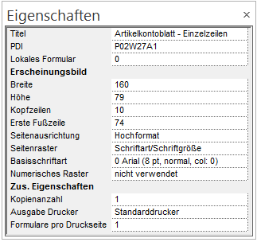

Wenn beim Formular bearbeiten kein Element ausgewählt ist und über die rechte Maustaste die Option Eigenschaft gewählt wird, können die Basiseinstellungen für das Formular bearbeitet werden:

Ø Titel
Bezeichnung des Formulars. Diese Bezeichnung wird dann z.B. auch im Spooler mit angezeigt bzw. kann nach dieser Bezeichnung auch gesucht werden (wenn Formulare bearbeitet werden sollen).
Ø PDI
Interne Information, kann nicht verändert werden.
Ø Lokales Formular
Kennzeichen, ob das Formular lokal gespeichert ist oder nicht. Die Option, ob ein Formular lokal gespeichert werden soll oder nicht, kann nur im "großen" Formulareditor eingestellt werden.
Erscheinungsbild
Ø Breite
Einstellung der Seitenbreite (hat nur Auswirkung auf die Ansicht im Formular-Editor).
Ø Höhe
Einstellung der Seitenhöhe
Ø Kopfzeilen
Dieses Feld gibt an, nach wie vielen Zeilen der Mittelteil beginnen soll (wie lang der Kopfteil sein soll). Dabei kann auch die Anzahl der Zeilen kleiner sein, als der Kopf tatsächlich lang ist - in diesem Fall wird die erste Mittelteilszeile erst dann gedruckt, wenn es keine Kopfteilszeilen mehr gibt.
Ø Erste Fußzeile
Dieses Feld gibt an, ab welcher Zeile der Fußteil gedruckt werden soll.
Ø Seitenausrichtung
Hier kann gewählt werden, ob das Formular standardmäßig in Hochformat oder in Querformat ausgegeben werden soll. Diese Information wird beim Drucken auch mit übergeben.
Ø Seitenraster
Aus der Auswahllistbox kann gewählt werden, ob ein numerischer Raster oder eine Schriftart als Basis für das Formular verwendet werden soll. Abhängig von dieser Einstellung können die nächsten beiden Felder bearbeitet werden:
Ø Basisschriftart
Hier kann eine der 10 vordefinierten Schriftarten ausgewählt werden. Die Definition der 10 Schriftarten erfolgt im Programm Customizing Tool Kit im Menüpunkt File/Edit Mesonic Fonts.
Ø Numerisches Raster
Aus der Auswahllistbox kann ein Raster ausgewählt werden. Ein Raster definiert, wie groß die Zeilen und Spalten einer Seite sein sollen. Abhängig von dieser Einstellung ist auch die Anzahl der Zeilen, die dann am Formular zur Verfügung stehen. Alternative Raster können nur über den "großen" Formulareditor angelegt werden.
Die Wahl des Seitenrasters hängt vom zu definierenden Formular ab. In der Regel erlaubt eine kleinere Rasterung eine genauere Positionierung. Um Überschneidungen zu vermeiden sollten Rasterung und verwendete Fonts allerdings korrelieren. Für das Bedrucken/Nachdrucken von Formularen (z.B. Umsatzsteuervoranmeldung) empfiehlt sich eine sehr feine Rasterung.
Die Wahl eines Fonts als Basiszeichensatz als Rastergrundlage ist z.B. beim Bedrucken von Zahlungsträgern mittels Matrixdrucker empfehlenswert.
Zus. Eigenschaften.
Ø Kopienanzahl
In diesem Feld kann die Anzahl der Kopien die ausgegeben werden sollen eingestellt werden (es wird jedoch hier der erste Ausdruck mitgezählt, d.h. möchten Sie zum ersten Ausdruck 3 Kopien erhalten, muss hier 4 eingestellt werden, usw.).
Diese Einstellung wird jedoch nur wirksam, wenn in der WinLine in der Druckersteuerung (für den betreffenden Drucker) die Anzahl der Copies 0 bzw. 1 beträgt, und die Einstellung Hochformat verwendet wird.
Ø Ausgabe Drucker
Mit dieser Option kann ein Formular direkt einem Drucker zugewiesen werden. Aus der Auswahllistbox kann einer der 50 Drucker hinterlegt werden, die auch in der WinLine angelegt werden können.
Ø Formulare pro Druckseite
Hier kann eingestellt werden, wie oft das Formular auf einer Seite gedruckt werden soll (z.B. auf einer Seite sollen 3 Zahlscheine hintereinander bedruckt werden).